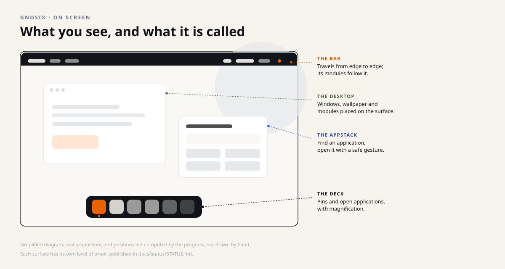
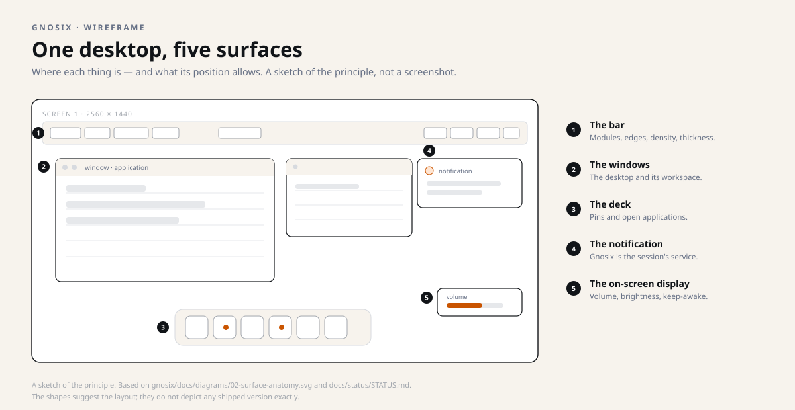
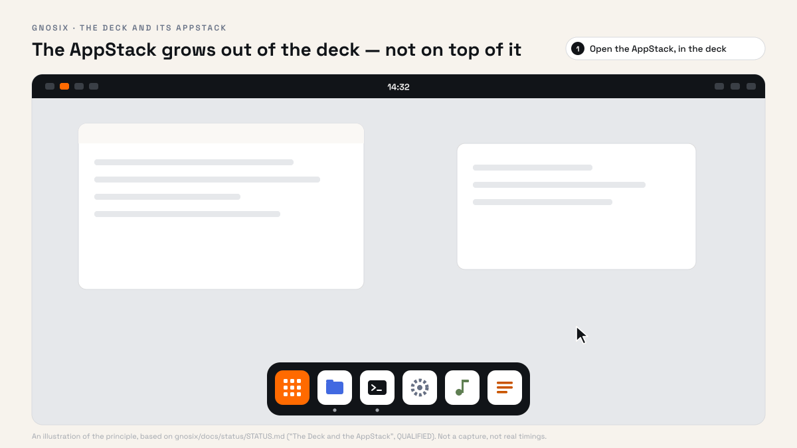
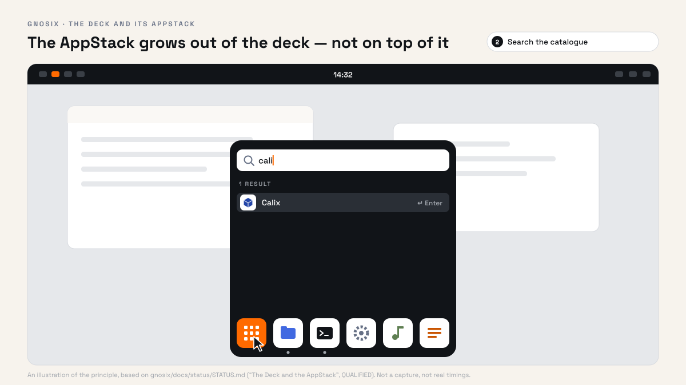
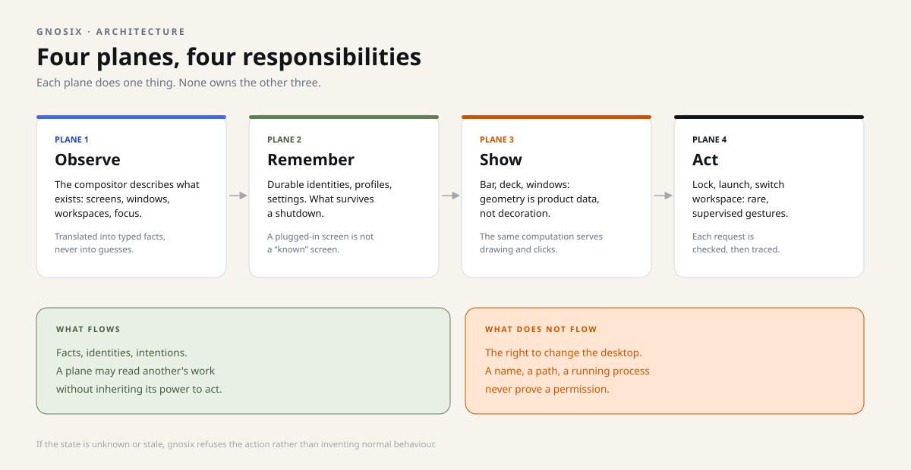
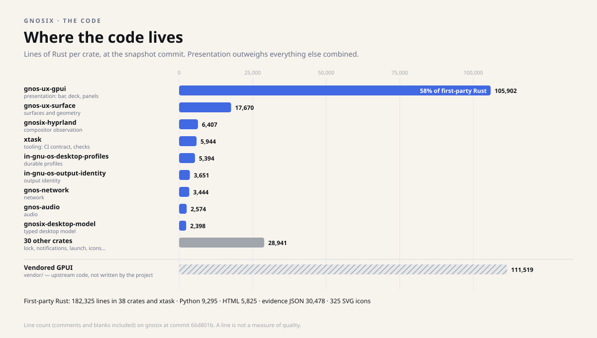
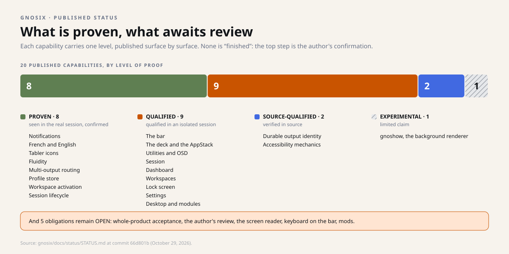
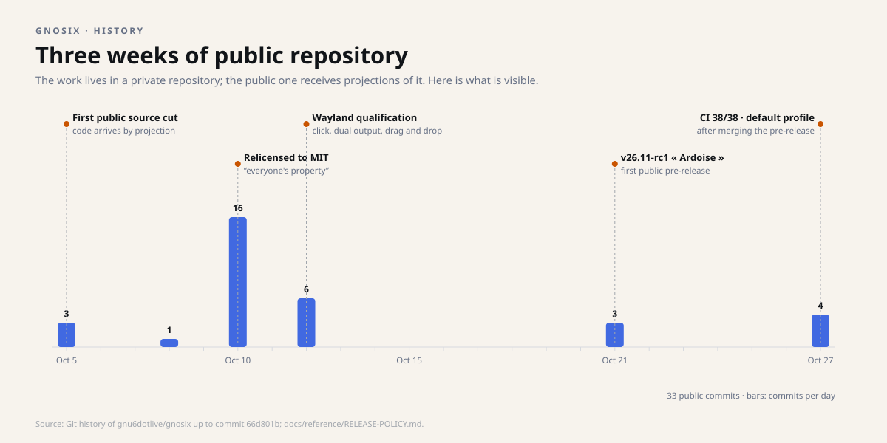
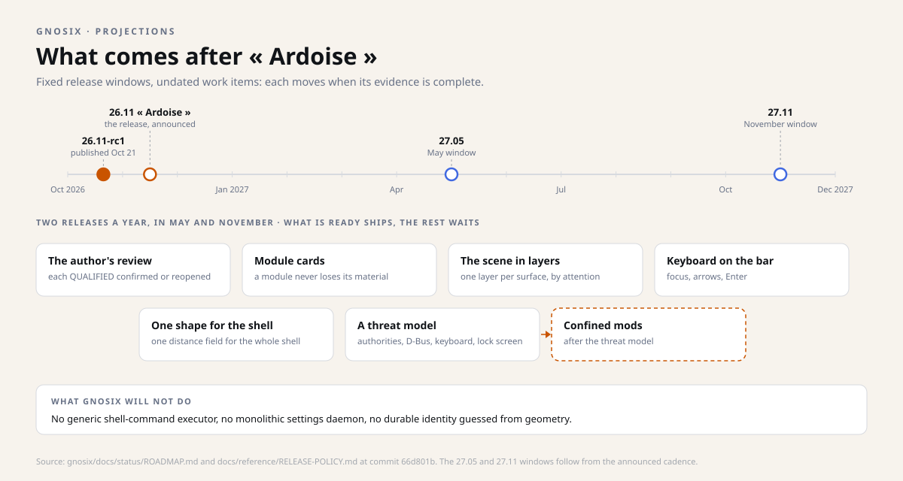

Snapshot of October 29, 2026. This dossier describes the four repositories as they stood that day; the projects have moved on since, and the repositories are the authority. Underlined links lead to the sources, frozen at their state of that day.
Dossier 1 · the desktop
gnosix
A desktop environment for Linux, written in Rust, that draws everything you see itself: the bar, the deck and its AppStack, the windows, the settings, the lock screen.
Experimental 26.11-rc1 « Ardoise » MIT licence
On this page
In one picture #
Think of a tidy workshop. There is the workbench where you act, the drawers where you keep what must survive the night, the shelf where the tools sit, and the rulebook that says who may open what.
A computer desktop is exactly that. Most desktops melt all four into a single program. gnosix keeps them apart, and names each one.
What it does, concretely #
Once started, gnosix replaces the session's graphical shell. It is not a decoration laid over an existing desktop: it is the desktop itself, drawn in Rust and displayed natively.


The bar
Persistent, on any edge of any screen. It moves along the frame; its modules follow it and turn with it. They can be reordered with the mouse. Edge, density, thickness and visibility are remembered.
The deck and the AppStack
A dock of application cards, with magnification. The AppStack searches the catalogue from there (recent, A–Z, categories, search) and launches through the launch authority. Pins are durable.
The utilities
Quick toggles (do not disturb, keep awake, microphone, Wi-Fi, Bluetooth), brightness (backlight and DDC/CI) and volume, with an on-screen display.
The session
Lock, suspend, log out, reboot, power off — through logind. Heavy actions are held back, blockers are shown.
The dashboard
Calendar, media controls (MPRIS) and system resources, extruded from the bar's clock.
The workspaces
A workspace manager with live window thumbnails — in memory only, never while the session is locked, with a list of excluded applications.
The notifications
gnosix is the session's notification service. Per-application rules, a "do not disturb" mode.
The lock screen
A lock screen with PAM, automatic lock after inactivity, and its settings.
The settings
A single surface: bar, deck, surfaces, displays (resolution, refresh rate, scale, rotation, position, with keep-or-revert), default applications, notifications, language, wallpaper.
Language and icons
English and French throughout, chosen in the settings, with a coverage check. Tabler icons drawn natively.


Frugal at rest, precise in motion
A desktop spends most of its time doing nothing. gnosix takes that into account: no redraw at rest. Nothing is repainted while nothing changes, which spares the graphics card and the battery.
When something moves — the bar changing edge, the deck stretching — motion follows 4-millisecond deadlines, set to the screen's real refresh rate. The repository measured it at 75 and 165 frames per second. At 165 Hz a frame lasts about 6 ms: a 4 ms deadline leaves room never to skip one.
Privacy by construction
The workspace manager shows live window thumbnails. The repository sets their bounds: thumbnails live in memory only, are never captured while the session is locked, and a list of excluded applications keeps sensitive windows out. Notifications have per-application rules and a "do not disturb" mode.
One text editor, everywhere
Every input field on the desktop — search, settings, lock screen — goes through the same editor, which splits text by grapheme (a character as you see it, accents and emoji included) and accepts input methods. French and English cover the whole shell, lock screen included, and a coverage check refuses a forgotten string.
Under the hood: four planes #
It is the project's most important architectural decision, and the easiest to explain: observing, remembering, showing and acting are four different trades. gnosix gives them four distinct planes.

The observation plane translates the compositor's facts into a typed, deterministic model: screens, workspaces, windows, focus, visibility. This model decides nothing; it describes.
The durable plane keeps identities and profiles. A plugged-in screen is not automatically "the known screen": the association between the session identity and the durable identity is explicit, and can deliberately fail.
The presentation plane projects the current state onto the screen. Geometry there is product data, not decoration: the same geometry is used to paint and to decide whether a click hits its target.
Finally, the authority plane carries out the rare gestures: locking, launching an application, switching workspaces. Each request carries a typed target and a freshness boundary. If the state is unknown or stale, the system refuses rather than inventing normal behaviour.
Two ways to build a desktop
| Question | "Monolithic" desktop | Separated desktop (gnosix) |
|---|---|---|
| Who knows the state? | The main program, a bit everywhere | A single, explicit model |
| Who may act? | Often the same program | Narrow, authenticated services |
| What happens if the state is unclear? | A plausible state is assumed | The action is refused |
| How do you prove a feature works? | "It seems to work" | A named, published level of proof |
Neither approach is "the right one" in absolute terms. The second costs more work, but makes failures explainable and permissions verifiable.
Where the code lives
At the snapshot commit, gnosix holds 182,325 lines of Rust written by the project, spread over 38 packages ("crates") and a checking tool. The presentation layer, gnos-ux-gpui, carries 58% of it on its own: drawing a desktop that responds well takes more code than observing or governing it.

What "proven" means here #
The repository distinguishes five states, and publishes them surface by surface. This is not rhetoric: it is what stops a successful demo from turning into a general promise.
| State | What it means | Example |
|---|---|---|
| PROVEN | Qualified in source, observed in the real session, confirmed by the author. | Notifications, French and English, fluidity. |
| QUALIFIED | Qualified in source and in an isolated Wayland session; deployed on the author's machine, confirmation pending. | The bar, the deck, the settings, the lock screen. |
| SOURCE-QUALIFIED | Contracts and invariants are exercised in source; broader real behaviour is not implied. | Durable screen identity, accessibility mechanics. |
| EXPERIMENTAL | Active work, limited claim. | The wallpaper rendering engine. |
| OPEN | A named obligation remains unresolved. | Full product acceptance. |

History: three weeks of public repository #
gnosix's public repository does not tell the whole story, and says so. Development happens in a private repository; the public one receives projections of it at each release. What is visible starts on October 5, 2026.

The milestones, in order
- October 5 — first public cut of the code, with a CI contract from day one.
- October 10 — from the GPL to the MIT licence: "everyone's property", says the pull request. Versions already distributed keep their permissions.
- October 12 — Wayland envelope tests: delayed click, two screens, local drag and drop; the remaining blockers are written down, not hidden.
- October 21 — v26.11-rc1 « Ardoise », published as a pre-release, with a research watch on upstream systems.
- October 27 — the pre-release merged, the CI contract at 38/38 in 26 seconds, and bootstrapping of a default desktop profile on first start.
How a release is born
The release policy, ratified on October 21, fits in a few rules. The private repository is the truth; the public repository is a projection written one way, by a script, with a whitelist of paths and a manifest of fingerprints. A public contribution is reviewed, integrated on the private side, and comes back with the next release.
The product is named by the year and month it ships, plus a mineral name, in alphabetical order: 26.11 « Ardoise » (slate). The crates keep semantic versioning: a crate whose interface changes must change its version, or the release check refuses it. Three channels: edge (the development branch, deployed on the author's machine), stable (the latest release), and a possible LTS, decided later.
On October 27, after merging the pre-release: 38 checks out of 38, in 25.9 seconds. The check set was reorganised with the pre-release (it had 48 before): the two figures do not compare, and the receipt says so.
Projections: what comes after « Ardoise » #
gnosix's roadmap is driven by evidence: a work item moves when its evidence is complete and, where required, accepted by the author. Releases, on the other hand, have fixed dates — two a year, in May and November — and carry whatever is ready.

The announced work
A review of every QUALIFIED surface; "cards" so each bar module keeps its material when moved; a scene built in layers; keyboard control of the bar; a single mathematical shape for the whole shell; a threat model; then confined mods, each in its own process, with declared permissions.
What will not be done
No generic shell-command executor, no monolithic settings daemon, no screen identity guessed from its geometry, and no silent adoption of a donor project's authority. A stable release for others is not claimed before an accessibility review.
What it changes, depending on who you are #
Curious Linux user
You can try a desktop unlike the others, on Arch Linux with Hyprland. Set aside some time: it is not yet a turnkey install for the general public.
Developer or integrator
The repository is a rare reference on separating observation, durable state, presentation and authority. The typed contracts and invariants are documented and testable.
Decision-maker or funder
The value is not "one more desktop". It is a method: a visible product whose every claim is bounded, dated and verifiable. The risk is owned and stated.
What is still open #
- Not yet a desktop for others. 26.11-rc1 is an experimental public pre-release, used daily by its author — not a stable product.
- Screen-reader accessibility is not claimed. Keyboard navigation and focus exist; real use by a blind person has not been reviewed.
- Keyboard control of the bar is designed, not built.
- Third-party modules are designed, not built. A threat model has to come first.
- The native wallpaper remains experimental.
Going further #
Technical — languages, building blocks, licence
Language: Rust, with a toolchain pinned in the repository. Display: Wayland and GPUI; the target compositor is Hyprland. Size: some forty internal packages, split by domain (desktop model, Hyprland integration, presentation, system authorities).
Licence: MIT for the original code and documentation since October 10, 2026; GPL versions already distributed keep their permissions. Third-party components keep their own terms.
Checking for yourself
The repository exposes three qualification commands. cargo xtask ci is the reproducible contract to run before any publication; cargo xtask verify adds checks tied to the host machine, to be used only in an authorised environment.
The current status, surface by surface, is published in docs/status/STATUS.md. It is the document to read before repeating a claim.